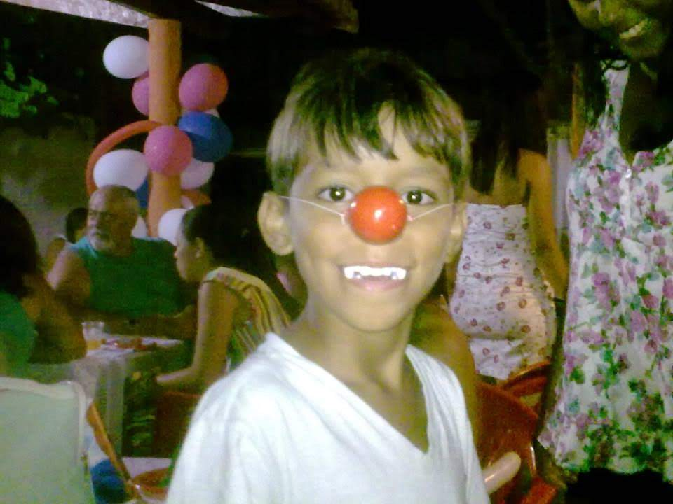
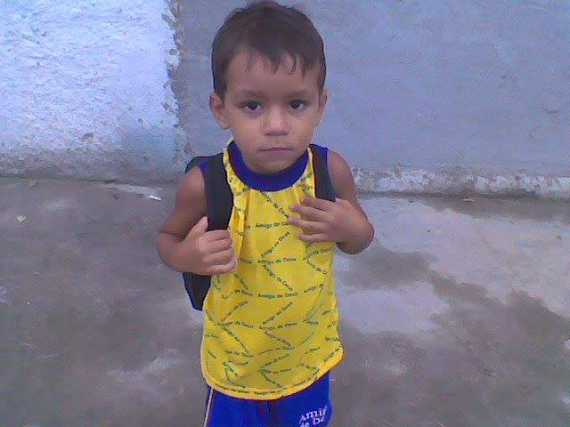

Meu nome é Rickelme Chaves, mas pode me chamar de Rick. Nasci na Bahia, onde vivi até os 10 anos, quando me mudei com minha família para o Espírito Santo em busca de melhores oportunidades de estudo.
Foi no ES que iniciei uma fase muito importante da minha vida, ao ingressar no IFES de Guarapari, onde cursei Técnico em Mecânica e construí grandes amizades. Apesar dessa formação, minha paixão por tecnologia sempre esteve presente desde a infância, principalmente por meio dos jogos e da curiosidade em entender como tudo funcionava.
Hoje, curso Ciência da Computação na UVV, seguindo meu objetivo de transformar esse interesse em carreira. Busco constantemente evoluir minhas habilidades e adquirir experiência na área, com o sonho de, no futuro, trabalhar com tecnologia fora do Brasil. EMOJI FODA

Iniciei meus estudos na Bahia, onde concluí o Ensino Fundamental I. Após minha mudança para o Espírito Santo, finalizei o Ensino Fundamental II na Escola João Calmon e iniciei o Ensino Médio no Catarina Chequer.
Posteriormente, fui aprovado no IFES - Campus Guarapari, onde cursei o Ensino Médio integrado ao Técnico em Mecânica. Durante esse período, participei de um projeto acadêmico apresentado na JEPE (Jornada de Ensino, Pesquisa e Extensão), com foco no funcionamento de um amortecedor, adquirindo experiência prática em pesquisa e desenvolvimento.
Concluí minha formação técnica e o ensino médio em 2025 e, atualmente, curso Ciência da Computação na UVV, dando continuidade à minha trajetória na área de tecnologia.
Construir uma carreira sólida em tecnologia, com foco em crescimento contínuo e oportunidades internacionais, atuando com o que mais gosto.